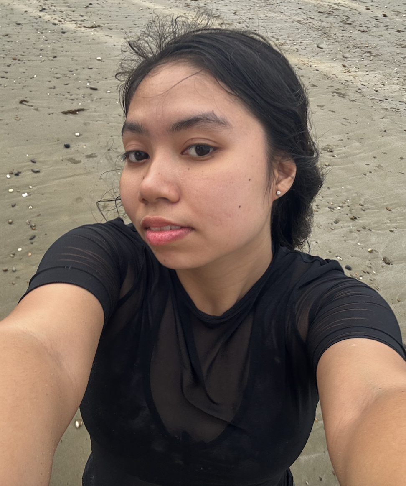

Calaisha Mae S. Ducao

Summary
I am a passionate web developer with experience in creating responsive and user-friendly websites. I have a strong foundation in HTML, CSS, and JavaScript, and I am always eager to learn new technologies and improve my skills.
Education
- Bachelor of Science in Computer Science, Palawan State University, 2023-2027
- Senior High School Diploma, Palawan National High School, 2016-2023
Work Experience
Skills
- Proficient in HTML, CSS, and JavaScript
- Experience with responsive web design
- Strong problem-solving skills
- Excellent communication and teamwork abilities
Awards and Certifications
- With High Honor - Palawan National High School (2023)
- Certificate of Completion - Call Center Training, Immersion Foundever Company (2023)
- Certificate of Completion - ICT Training, Immersion Foundever Company (2023)
Other Information